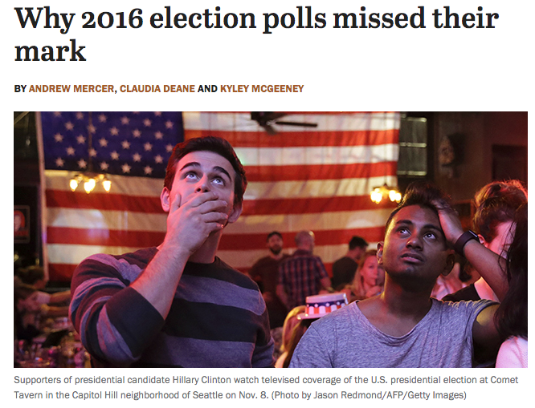

results2024 <- read.csv("elecresults24.csv", stringsAsFactors = T)7 Prediction
In this section, we move to our next social science goal
- Describe
- Explain, evaluate, and recommend \(\rightarrow\) Causality
- Predict
- Discover
Most of the tools we have been working on thus far have focused on first describing our data and then conducting tests through different types of comparisons and visualizations, in order to assess a deductive hypothesis, explaining the relationship between two variables.
Now we turn to a different goal.
Recall the difference between Correlation vs. Causality using our graphic showing the popularity of Duck Dynasty in different parts of the country. In 2016, researchers at the NY Times noticed that areas in the country where the television show Duck Dynasty was popular also tended to support Donald Trump at higher rates.

For those used to working with the goal of explanation, shifting to prediction and classification may mean we need to shift what types of information we think is important.
- Correlation: Areas that watch Duck Dynasty are more likely to support Trump (degree to which two variables ``move together”)
- Causality: Watching Duck Dynasty (vs. not watching) causes you to support Trump.
If we were interested in the goal of explaining voting decisions (what causes someone to vote a certain way?), we might not care if someone watches the show. However, if we were just interested in predicting vote share or voting decisions, a strong correlation could still be useful. Without spending a single dollar on surveying a community, we might have a general sense of their support for a candidate.
7.1 Prediction Overview
Our goal: Predict (estimate/guess) some unknown using information we have as accurately and precisely as possible
- Prediction could involve estimating a numeric outcome. Alternatively, prediction also involves classification– predicting a categorical outcome (e.g., prediction of who wins vs. who loses).
Some political science examples of this might include
- Categorizing comments on social media as being toxic/nasty/uncivil

- Detecting Fake news and misinformation

- Forecasting election results
Other examples
- Trying to detect hate speech online
- Predicting where or when an attack might occur
- Trying to classify a large amount of text into subject or topic categories for analysis
What other types of things might we try to predict or classify in political science?
7.2 Process of Prediction
Predict (estimate/guess) some unknown using information we have – and do so as accurately and precisely as possible.
- Choose an approach
- Using an observed (known) measure as a direct proxy to predict an outcome
- Using one or more observed (known) measures in a regression model to predict an outcome
- (Beyond the course) Using a statistical model to select the measures to use for predicting an outcome
- Assess accuracy and precision
- Prediction error: \(Prediction - Truth\)
- Bias: Average prediction error: \(\text{mean}(Prediction - Truth)\)
- A prediction is `unbiased’ if the bias is zero (If the prediction is on average true)
- Root-mean squared error: \(\sqrt{\text{mean}((Prediction - Truth)^2)}\)
- Like `absolute’ error– the average magnitude of the prediction error
- the typical distance the prediction is from the truth
- Confusion Matrix
- A cross-tab of predictions you got correct vs. predictions you got wrong (misclassified)
- Gives you true positives and true negatives vs. false positives and false negatives
- Iterate to improve the prediction/classification
- Often, we repeat steps 1-3 until we are confident in your method for predicting.
- Danger Zone: Eventually, after you have tested the approach and are satisfied with the accuracy, you may start applying it to new data for which you do not know the right answer.
7.3 Example: Forecasting 2024 US Election based on 2020 Results
Let’s try to predict the 2024 election results using just the 2020 results.
For a video explainer of the code for a similar application, see below. (Via youtube, you can speed up the playback to 1.5 or 2x speed.)
Variables
state_abbrevandstate: state or state and districtcalled2024: result of 2024 election, R or Dcalled2020: result of 2020 election, R or Dcalled2016: result of 2016 election, R or Ddem_percent24: percentage for the Democratic candidaterep_percent24: percentage for the Republican candidatedem_percent20: percentage for the Democratic candidaterep_percent20: percentage for the Republican candidateev_total: Electoral votes associated with a state/ district of a state during the 2024 election
sum(results2024$ev_total[results2024$called2024 == "R"])[1] 312sum(results2024$ev_total[results2024$called2024 == "D"])[1] 2267.3.1 Choose Approach
- Choose an approach: Using an observed (known) measure as a direct proxy to predict an outcome
- Let’s use the 2020 result as a direct proxy to predict 2024.
results2024$predicted2024 <- results2024$called20207.3.2 Assess Accuracy
- Assess accuracy
What proportion of states did we get correct?
mean(results2024$predicted2024 == results2024$called2024)[1] 0.89285717.3.3 Classification
We want to correctly predict the winner of each state
Prediction of binary outcome variable = classification problem
- true positive: correctly predicting Trump to be the winner
- false positive : incorrectly predicting Trump to be the winner (misclassification)
- true negative : correctly predicting Trump to be the loser
- false negative : incorrectly predicting Trump to be the loser (misclassification)
We define one outcome as the “positive” and one as the “negative.” For now, we will say a Trump win is the positive and a Harris win is the negative. This terminology comes from settings where a positive result just means “an event has occurred” (e.g., a positive medical test result might mean, yes, you broke your leg). You could flip this and make a Harris win the positive and a Trump win the negative as long as you interpret things correctly.
Confusion Matrix: Tells us how we went right, how we went wrong.
table(predicted=results2024$predicted2024, actual = results2024$called2024) actual
predicted D R
D 22 6
R 0 28Which states did we get wrong?
results2024$state[results2024$predicted2024 != results2024$called2024][1] Arizona Georgia Michigan Nevada Pennsylvania
[6] Wisconsin
56 Levels: Alabama Alaska Arizona Arkansas California Colorado ... Wyoming7.3.4 Iterate to improve predictions
Start back at step one. We continue to repeat steps 1 and 2 until we are confident in our predictions.
How could we improve our predictions of elections? What other information could we use?
7.4 Polling as Predictive
Many forecasters use pre-election polls in their models to predict election outcomes. In 2016 and 2020, polling-based forecasts received a lot of criticism
Prior to the 2016 elections, forecasts that used polls seemed confident that Hillary Clinton would win the election. Political analysts also seemed to think the polls were favorable to Clinton.

We all know that afterwards, Clinton did not win.

This led public opinion scholars and practitioners to do a deep investigation into the quality of pre-election polling. Like 2016, following the 2020 election, a similar team investigated the quality of pre-election polling in 2020. Here, while many polls pointed to a favorable outcome for Biden, the results seemed closer than one might have anticipated.

The results of these findings are in the AAPOR report.
7.4.1 Choose an Approach: Let’s use some polls!
We will load polls from the 2024 election cycle. This cycle was unique because we had a change in candidates somewhat late in the campaign. Not all states were able to conduct polls with Harris on the ballot, and even if they did, not all polling aggregators have included data from these polls.
As a results, our polling dataset is somewhat incomplete. It contains polls only from states we might think are more competitive, or at least, more likely to be polled in an election.
In this next exercise, we will break our prediction activitiy into two sections. For states with polls available, we will make polling-based predictions for every state. For states without polls, we will rely on the 2016 party result as our prediction. We then combine both to get a prediction for the full election.
Let’s load the data!
polls24 <- read.csv("polls24bothsources.csv")Variables
Harris,Trump, poll-based percent going for each candidatestate: state or state and districtsamplesize: sample size of the pollsampletype: if it was a poll of likely voters, registered voters, or some other populationdaystoelection: how close we are to 11/5/2024called2024: result of 2024 election, R or Dcalled2020: result of 2020 election, R or Dcalled2016: result of 2016 election, R or Ddem_percent24: percentage for the Democratic candidaterep_percent24: percentage for the Republican candidatedem_percent20: percentage for the Democratic candidaterep_percent20: percentage for the Republican candidateev_total: Electoral votes associated with a state/ district of a state during the 2024 election
Let’s make a variable that shows us the predicted margin for Trump based on the poll in a given row, and a variable for the actual margin on Election Day.
polls24$pollmargin24 <- polls24$Trump - polls24$Harris
polls24$resultmargin24 <- polls24$rep_percent2024 - polls24$dem_percent2024Let’s also see what states are in our polling data.
## Iteration vector
states <- unique(polls24$state)
states [1] "Arizona" "Florida" "Georgia" "Iowa"
[5] "Michigan" "Minnesota" "Nevada" "New Hampshire"
[9] "North Carolina" "Pennsylvania" "Texas" "Virginia"
[13] "Wisconsin" "California" "Illinois" "Maine"
[17] "Maine CD-1" "Maine CD-2" "Maryland" "Missouri"
[21] "Montana" "Nebraska" "Nebraska CD-2" "New Mexico"
[25] "New York" "Ohio" "Oregon" "Tennessee"
[29] "Utah" "Vermont" "Washington" "West Virginia" 7.4.2 Imagine the process for one state
For each state with polling data, we will make our prediction for the election by taking the average of the most recent polls in the state. We will define this as all polls within 15 days of the election, or, if some states only had polls taken much earlier, we will grab whatever the most recent poll’s result was.
## Subset to just Arizona
states[1][1] "Arizona"subdata <- subset(polls24, state == states[1])
## Further subset to the "latest polls"
subdata <- subset(subdata, daystoelection < 15 |
daystoelection == min(subdata$daystoelection) )Now let’s extract the actual margin for Trump, the poll-based predicted margin, and finally, let’s assign electoral votes based on our prediction.
## Find the margin for the actual result
result.marginAZ <- mean(subdata$resultmargin24)
result.marginAZ[1] 0.0552723## Find the margin for our prediction
polls.marginAZ <- mean(subdata$pollmargin24)
polls.marginAZ[1] 0.02588636## Allocate votes for Biden according to the margin
trumpvotesAZ <- ifelse(mean(subdata$pollmargin24) > 0,
unique(subdata$ev_total), 0)
trumpvotesAZ[1] 11We predicted Trump would win Arizona because the polls.marginAZ is positive. Therefore, we assigned Trump 11 electoral votes in this example.
7.4.3 Loop through all states
Now let’s repeat this process for all states.
## Iteration vector
states <- unique(polls24$state)
## Container vectors
polls.margin24 <- result.margin24 <- trumpvotes_pred <- trumpvotes_act <-
rep(NA, length(states))
names(polls.margin24) <- names(result.margin24) <-
names(trumpvotes_pred) <- names(trumpvotes_act) <-as.character(unique(states))## Loop
for(i in 1:length(states)){
subdata <- subset(polls24, state == states[i] )
subdata <- subset(subdata, daystoelection < 15 |
daystoelection == min(subdata$daystoelection) )
result.margin24[i] <- mean(subdata$resultmargin24)
polls.margin24[i] <- mean(subdata$pollmargin24)
trumpvotes_pred[i] <- ifelse(mean(subdata$pollmargin24) > 0,
unique(subdata$ev_total), 0)
trumpvotes_act[i] <- ifelse(mean(subdata$resultmargin24) > 0,
unique(subdata$ev_total), 0)
}
sum(trumpvotes_pred) # predicted[1] 198sum(trumpvotes_act) # predicted[1] 224Less competitive states
We also need to assign Trump votes to states not included in the poll data. Here, we will continue to predict based on the results of the 2020 election.
## Subset only states without polling data for Harris
elecresults_noncomp <- subset(results2024, (! state %in% states))
## predicted EV
trumpvotes_lesscomp_pred <- ifelse(elecresults_noncomp$called2020 == "R", elecresults_noncomp$ev_total, 0)
names(trumpvotes_lesscomp_pred) <- elecresults_noncomp$state
## actual EV
trumpvotes_lesscomp_result <- ifelse(elecresults_noncomp$called2024 == "R", elecresults_noncomp$ev_total, 0)
names(trumpvotes_lesscomp_result) <- elecresults_noncomp$state
# predicted Trump votes from less competitive states vs. actual
sum(trumpvotes_lesscomp_pred) [1] 88sum(trumpvotes_lesscomp_result) [1] 88The overall prediction combines the less competitive and competitive states:
predictedEV <- c(trumpvotes_lesscomp_pred,trumpvotes_pred)
sum(predictedEV)[1] 286actualEV <- c(trumpvotes_lesscomp_result, trumpvotes_act)
sum(actualEV)[1] 3127.4.4 Check Accuracy
7.4.4.1 Quantitative Measures of Accuracy
From the polls, let’s calculate two common measures of prediction error: bias (the average prediction error) and root-mean-squared error (a typical magnitude of the prediction error).
## Calculate Bias (Predicted Trump - True Trump)
predictionerror <- polls.margin24 -result.margin24
bias <- mean(predictionerror)
bias[1] -0.03228962## Root Mean Squared Error
sqrt(mean((predictionerror)^2))[1] 0.06040716## Histogram of Prediction Errors to Show Bias
hist(predictionerror,
xlab = "Prediction Error (Predicted Trump Margin - Actual)",
main = "Histogram of Prediction Error in Latest Polls")
abline(v=mean(predictionerror), col="red",lwd=2)
abline(v=0, col="blue", lwd=2)What do these results suggest about the polls?
7.4.4.2 Classification
Instead of quantifying how far we were off, let’s see where we were right vs. where we were wrong.
Classification
- true positive: correctly predicting Trump to be the winner
- false positive: incorrectly predicting Trump to be the winner
- true negative: correctly predicting Trump to be the loser
- false negative: incorrectly predicting Trump to be the loser
Confusion Matrix
Let’s classify our predictions.
actualwins <- ifelse(trumpvotes_act > 0, "Trump Won", "Harris Won")
predictedwins <- ifelse(trumpvotes_pred > 0, "Trump Won", "Harris Won")table(predictedwins, actualwins) actualwins
predictedwins Harris Won Trump Won
Harris Won 14 3
Trump Won 0 15Where did the polls get it wrong?
actualwins[actualwins != predictedwins] Michigan Wisconsin Maine CD-2
"Trump Won" "Trump Won" "Trump Won" trumpvotes_act[actualwins != predictedwins] Michigan Wisconsin Maine CD-2
15 10 1 What’s your conclusion?
- Are the polls alright?
- How could you improve the prediction?
- Wait a second… why even poll?
Nate Silver’s analysis of the 2025 polls is available here:https://www.natesilver.net/p/so-how-did-the-polls-do-in-2024-its